Learning Goals
At the end of this Tutorial, you will be able to:
- Insert images in a web page and add alternative text with the alt attribute
- Insert spacing beneath images, add drop shadow and rounded corner effects, and remove image backgrounds.
You can view finished versions of the four sample web pages you will create in this Tutorial by clicking the links below. The finished samples will each open in a new tab of your web browser.


Adding images to a web page
You add an image to a web page using the single, simple line of HTML code such as shown below.
<img src="assets/img/dog.jpg" alt="My dog Rover, playing in the park">
Or:
<img src="assets/img/cat-picture.png" alt="My cat Judy, sitting on a chair">
As you can see from the examples below, the HTML <img> tag for every image has the same format.
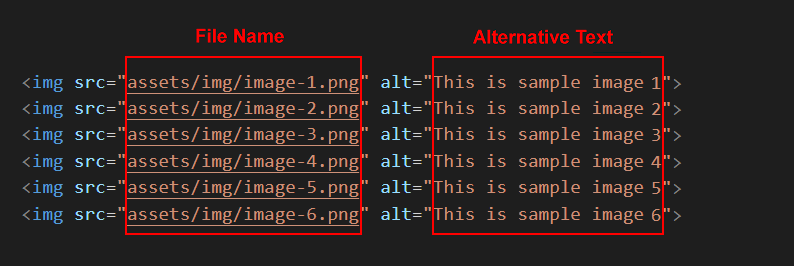After the <img> tag name are the three letters of src which set the source (location and file name) of the image file. This is known as an attribute or property of the <img> tag.
Note that the <img> tag does not need a closing tag. It is one of the few examples of self-closing tags in HTML.
Images and alternative text
If, as the result of a slow connection or other reason, an image on a web page cannot be displayed, HTML offers an attribute named alt, a short form of ‘alternative text.’
In the above example, all six inserted images each include a short alternative description.
If you omit the alternative text for any image on a web page, your web page is regarded as "invalid".
Below you can see the output produced by the official W3C HTML validity checker on a web page which is missing the alt attribute from an img tag.

Downloading your sample files
Your first step is to download the files you need for this Tutorial.
- Download the following compressed file to your computer: lesson-images.zip
- Copy the ZIP file into your websites folder.
- Uncompress the ZIP file as shown below.

- The files will unzip into a new sub folder in your websites folder named lesson-images.
 Inside this new sub-folder you should see 25 files: four HTML files, four CSS files and a group of image files.
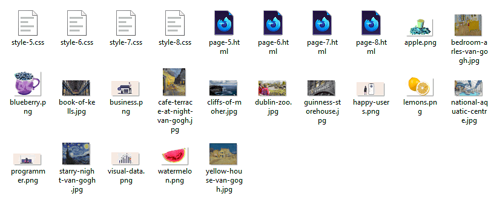
Next, you will copy these unzipped files to their appropriate sub folders.
Inside this new sub-folder you should see 25 files: four HTML files, four CSS files and a group of image files.
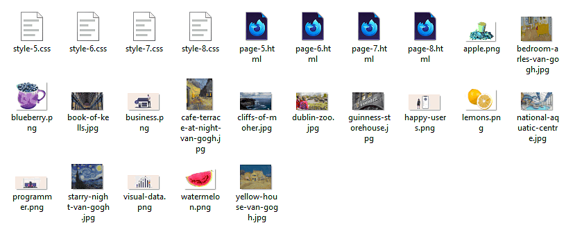
Next, you will copy these unzipped files to their appropriate sub folders. - From the websites/lesson-images sub-folder, copy the four HTML files to your websites/exercises sub-folder. 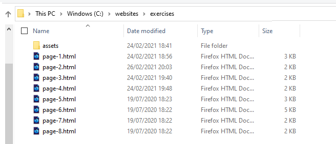
- From the websites/lesson-images sub-folder, copy the four CSS files to your websites/exercises/assets/css sub-folder.

- Display your websites/exercises/assets sub-folder, and inside it create a new sub-folder named img.

- To this new websites/exercises/assets/img sub-folder, copy the 17 image files from your websites/lesson-images sub-folder.

- You no longer need the downloaded lesson-images3.zip file or the websites/lesson-images sub-folder. You can delete them both.

- In your web browser, such as Brave, Chrome or Firefox, display these four web pages:
page-5.html
page-6.html
page-7.html
page-8.html
You are now ready to work with the sample files you have downloaded.
Working with the van Gogh web page
In this section, you will work with the sample page-5.html web page, the sample style-5.css stylesheet and four images.
- In Visual Studio Code, open the following two files:
page-5.html
style-5.css - After the paragraph under the heading “The Arles Years”, type the following code:
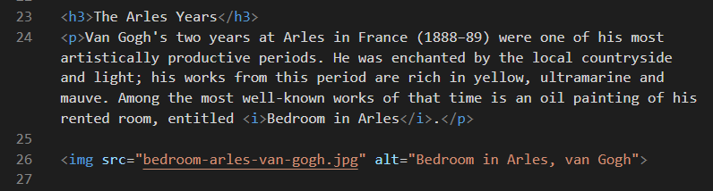
Or, just copy-and-paste the following:
<img src="assets/img/bedroom-arles-van-gogh.jpg" alt="Bedroom in Arles, van Gogh">
- Next, add the following three images in the locations shown.

<img src="assets/img/yellow-house-van-gogh.jpg" alt="The Yellow House, van Gogh">

<img src="assets/img/cafe-terrace-at-night-van-gogh.jpg" alt="The Cafe Terrace at Night, van Gogh">
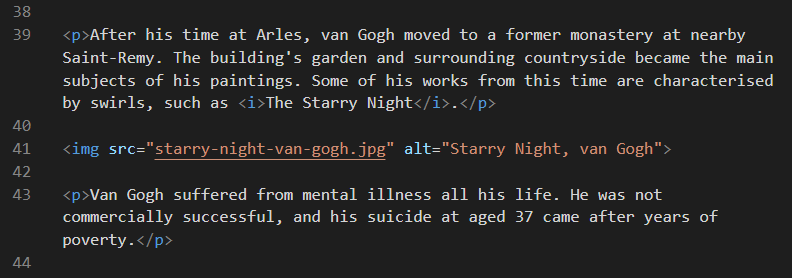<img src="assets/img/starry-night-van-gogh.jpg" alt="Starry Night, van Gogh">
- When finished, save your page-5.html file and view it in your web browser.
Adding a drop shadow effect
To give the images on your web page a drop shadow effect, add the following at the end of your style-5.css stylesheet.
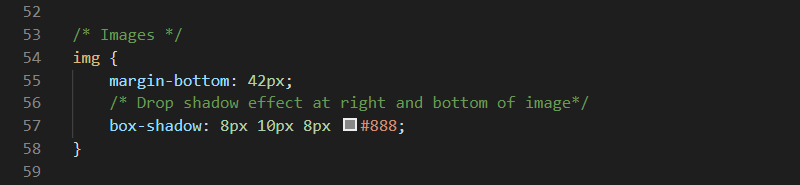This will also add a vertical bottom margin of 42 pixels under each image.
Save your CSS file and view the effect on your page-5.html web page in your browser.
In VS Code, you can now close your page-5.html and style-5.css files.
Click page-5.html to view a finished sample of this web page in a new tab of your web browser.
Working with the Tourism web page
In this section, you will work with the sample page-6.html web page, the sample style-6.css stylesheet and five images.
- In Visual Studio Code, open the following two files:
page-6.html
style-6.css - Directly under the sub-heading “Guinness Storehouse, Dublin”, type the following code:
 Or, just copy-and-paste the following:
Or, just copy-and-paste the following:
<img src="assets/img/guinness-storehouse.jpg" alt="Guinness Storehouse">
- Next, add the following four images to your HTML file in the locations shown. 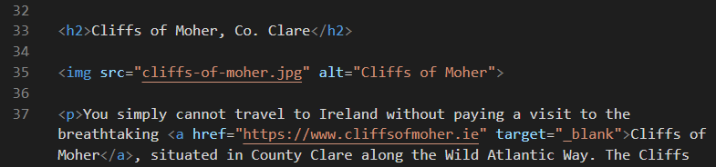 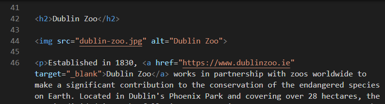 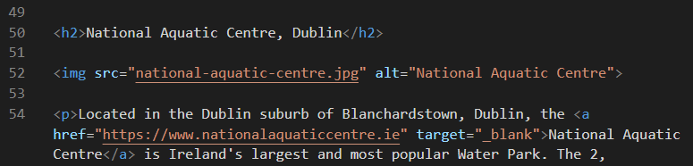 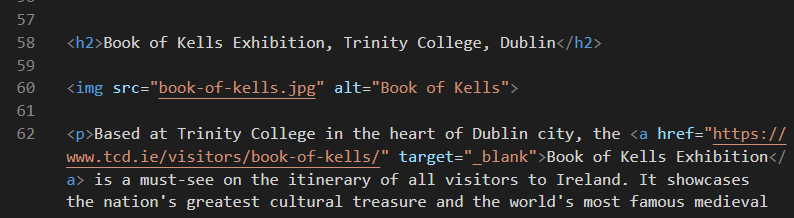
- When finished, save your page-6.html file and view it in your web browser.
Adding a rounded corner effect
To give the images on your web page a rounded corner effect, add the following at the end of your style-6.css stylesheet.

This will also add a vertical bottom margin of 32 pixels under each image.
Save your CSS file and view the effect on your page-6.html web page in your browser.
In VS Code, you can now close your page-6.html and style-6.css files.
Click page-6.html to view a finished sample of this web page in a new tab of your web browser.
Working with the Smoothies web page
In this section, you will work with the sample page-7.html web page, the sample style-7.css stylesheet and four images.
- In Visual Studio Code, open the following two files:
page-7.html
style-7.css - After the paragraph under the heading “Smooth Smoothies”, type the following line to add an image named “watermelon.png”:
 Or, just copy-and-paste the following:
Or, just copy-and-paste the following:
<img src="assets/img/watermelon.png" alt="Watermelon Wonder">
- Next, add the following three further images to your HTML file at the locations shown.
 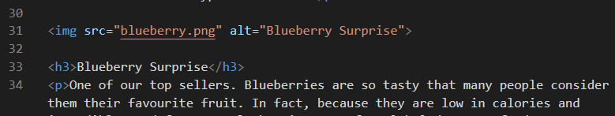
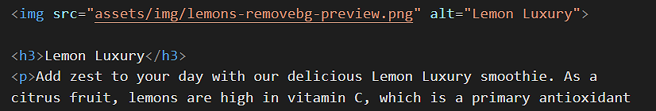
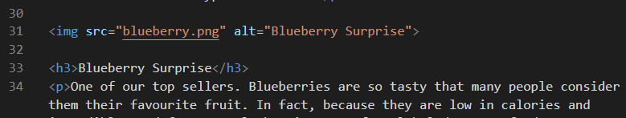
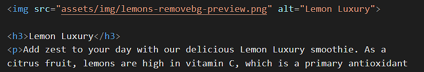 - When finished, save your page-7.html file and view it in your web browser.
Removing an image background
You will see that the lemons.png image does not have a transparent background. Follow these steps to make the background of the image transparent.
- Open a new tab in your web browser and go to this web address: remove.bg
- Click the Upload image button, and upload your lemons.png image file. 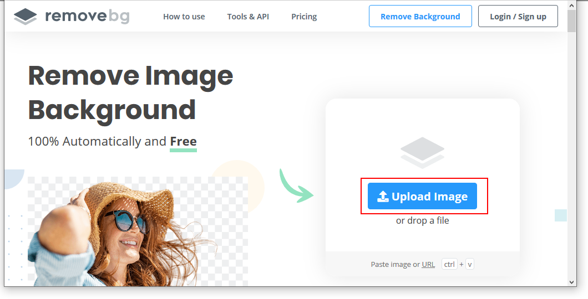
- When the operation is finished, click the Download button. 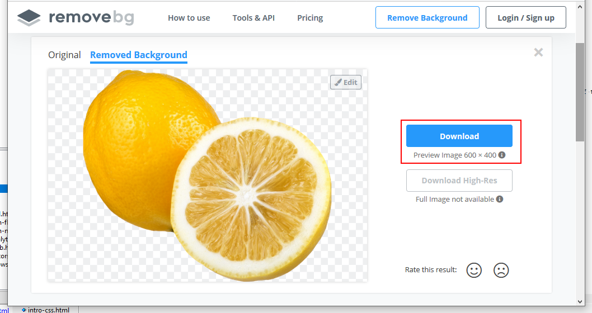
- Your downloaded file will have a modified name such as: lemons-removebg-preview.png
- Copy this file to your websites folder, and add it to your web page to replace the original file which had a non-transparent, white background.
Save your web page and view the result in your browser.
In VS Code, you can now close your page-7.html and style-7.css files.
Click page-7.html to view a finished sample of this web page in a new tab of your web browser.
Working with the Software web page
In this section, you will work with the sample page-8.html web page, the sample style-8.css stylesheet and four images.
- In Visual Studio Code, open the following two files:
page-8.html
style-8.css - At the very top of the web page, just after the opening <body> tag, type the following line to add a new image named “visual-data.png”:
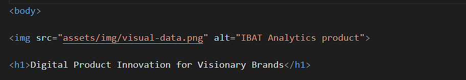
Or, just copy-and-paste the following:
<img src="assets/img/visual-data.png" alt="IBAT Analytics product">
- Next, add the following three more images to your HTML file at the locations shown.
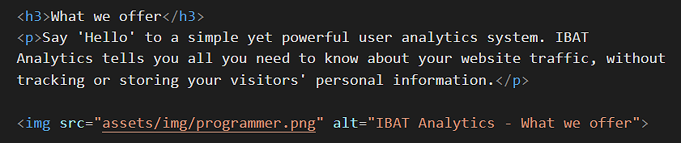
 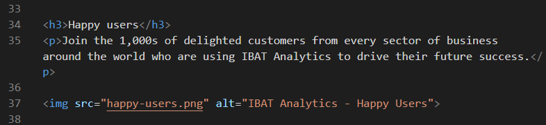
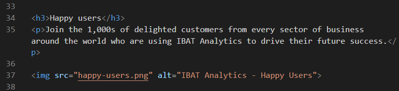 - When finished, save your page-8.html file and view it in your web browser.
In VS Code, you can now close your page-8.html and style-8.css files.
Click page-8.html to view a finished sample of this web page in a new tab of your web browser.
Updating your website home page
Now that you have created and styled four new web pages, let’s add hyperlinks to these new pages to the ‘home page’ of your web site.
Updating your home page content
Follow the steps below:
- In Visual Studio Code, open this HTML file in your websites folder: index.html Its content should look as follows: 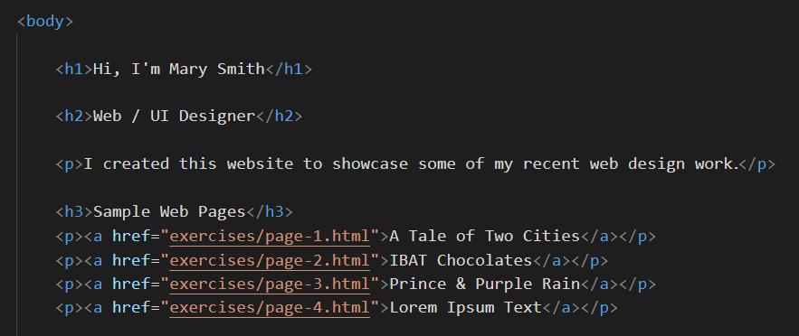
- Copy-and-paste the following new lines to your web page, directly under the line that contains the link to the page-4.html web page.
<p><a href="exercises/page-5.html">Vincent van Gogh</a></p> <p><a href="exercises/page-6.html">Irish Tourism</a></p> <p><a href="exercises/page-7.html">Smoothies</a></p> <p><a href="exercises/page-8.html">Software Analytics</a></p>
- The <body> of your edited home page should now look similar to that below. 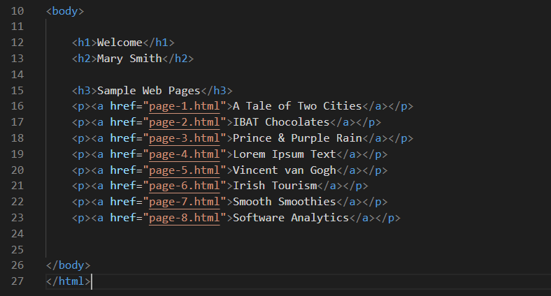
Save your index.html web page and view the result in your browser.
Adding an image to your home page
Before adding images to the pages of your personal website, you need to create a sub-folder to store them.
For Microsoft Windows 10 users, here are the steps:
- Open File Explorer, display your 📁 websites/assets sub-folder.
- In the blank space at the right side, right-click and choose New | New folder from the context menu.

- Give your new sub-folder the name img.


DO NOT type upper-case letters. Type img.
DO NOT type 'Img' or 'IMG'.

✅ That’s it. The assets sub-folder of your 'main' websites folder now has two sub-folders: one for stylesheets and one for images.
Now, you can add one or more images to the home page of your website.
- In VS Code, open your home page index.html file.
- In your web browser, select and download a suitable image from the range of copyright-free, stock photography websites.
- Copy your selected image from your Downloads folder to your assets/img sub-folder.
- In VS Code, add the image to your index.html web page. In the img tag, don’t forget to include the alt attribute with some descriptive text.
- Save your web page and view it in your web browser.
✅ Another task complete.
Adding a favicon to your home page
A favicon is a small icon (really a set of icons for different screens) that is displayed within the browser tabs and bookmarks bar of a web browser. See the examples below.

A favicon help users visually identify your web pages more easily within browser tabs, bookmarks, shortcuts, and address bars.
You need to update the form in the contact page of your website template.
- Create a square PNG image of at least 70x70. Your image should be 260x260 or more for best results.
- Go to the free Fav Icon Generator website at the following web address: https://favicon.io
- Choose the PNG -> ICO option.

- On the next screen, drag-and-drop the image you want to use as your favicon, and then click the Download button.
- Copy your downloaded ZIP to the assets/img sub-folder of your 'main' website folder.
- Unzip the ZIP file to create the following files.
- android-chrome-192x192.png
- android-chrome-512x512.png
- apple-touch-icon.png
- favicon-16x16.png
- favicon-32x32.png
- favicon.ico
- site.webmanifest
- Copy-and-paste the following code to your 'home page' and your privacy page, to just below the description meta tag in the head.
<link rel="apple-touch-icon" sizes="180x180" href="assets/img/apple-touch-icon.png"> <link rel="icon" type="image/png" sizes="32x32" href="assets/img//favicon-32x32.png"> <link rel="icon" type="image/png" sizes="16x16" href="assets/img//favicon-16x16.png"> <link rel="manifest" href="assets/img/site.webmanifest">
Uploading your files to GitHub
After finishing your web pages and stylesheets, you are now ready to upload them to your account on GitHub.
- Open a new tab in your web browser and go to GitHub.com. If you are not already signed in to your GitHub account, sign in now.

- On your GitHub home page, click the ‘repo’ that holds your web pages. Its name will look as follows, where username is your chosen username on GitHub.
username.github.io

- On the next GitHub screen displayed, near the right of the screen, you can see a button named Add file. Click on it. 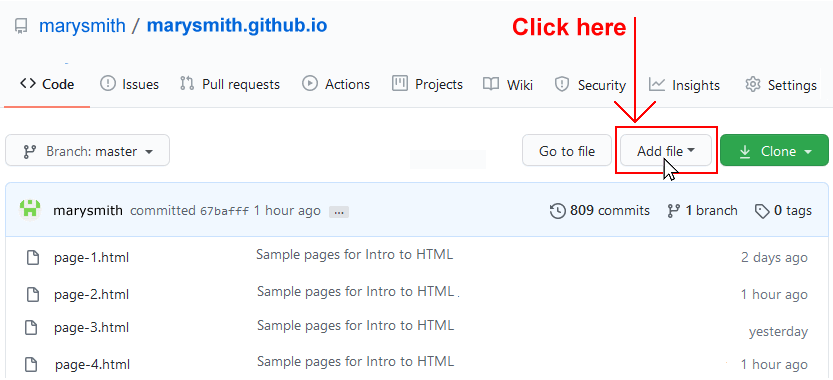
- From the dropdown list displayed, choose the option Upload files.

- In File Explorer (Windows 10) or Finder (Apple Mac), drag-and-drop your 📄 index.html file and your 📁 assets and 📁 exercises sub-folders to upload them to your repository on GitHub.

- Scroll down to the bottom of the GitHub screen, and accept or edit the short message (Add files via upload) in the Commit changes box.
- Finally, click the green Commit changes button to upload your files.

Your updated home page and four new web pages are now published on GitHub at web addresses similar to the following:
https://username.github.io/index.html
https://username.github.io/exercises/page-5.html
https://username.github.io/exercises/page-6.html
https://username.github.io/exercises/page-7.html
https://username.github.io/exercises/page-8.html
It may take a few minutes for your uploaded files to appear on GitHub.